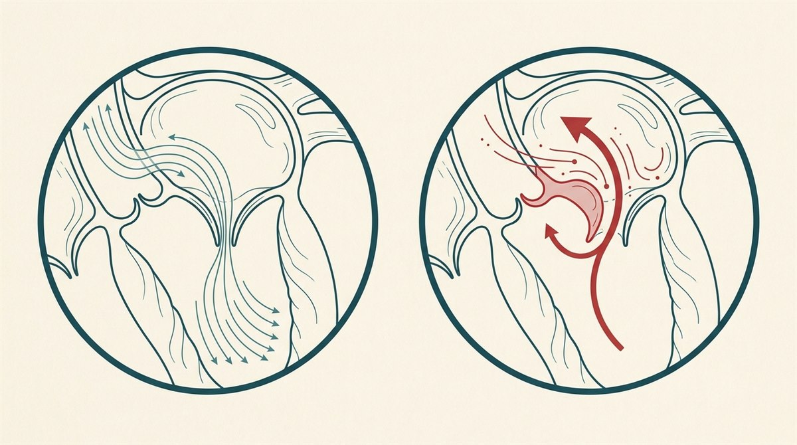

什麼是二尖瓣膜脫垂？
二尖瓣（mitral valve）位在左心房與左心室之間，由兩片瓣葉和連著它們的腱索（chordae tendineae）組成。正常情況下，心臟收縮時兩片瓣葉會緊密閉合，讓血液只能單向從左心室送往主動脈。
二尖瓣膜脫垂（mitral valve prolapse, MVP）是指心臟收縮時，一片或兩片瓣葉往上「膨出、脫垂」回左心房，無法完全密合。若密合不良，血液就會逆向漏回左心房，稱為二尖瓣逆流（mitral regurgitation）。MVP 也有人稱為「喀擦聲—雜音症候群（click-murmur syndrome）」或「鬆軟瓣膜症候群（floppy valve syndrome）」。

「我二十年前就被說有二尖瓣脫垂，現在還算嗎？」
這是門診很常聽到的一句話，答案也常讓病人鬆一口氣。二尖瓣脫垂的診斷這二、三十年來變了很多。
2000 年以前，MVP 主要靠聽診＋症狀來診斷——只要有心悸、胸悶等不太好歸類的症狀，加上聽起來像脫垂，常常就被丟進「二尖瓣脫垂」這個大籃子。那個年代大約有 10～15% 的人被貼上這個標籤。
後來心臟超音波技術大幅進步，診斷標準也收得更嚴謹，現在真正符合診斷的其實只有約 2% 的人。所以如果你是很久以前被診斷的，很合理的做法是重新做一次心臟超音波，確認這個診斷到現在還成不成立。
脫垂 vs. 逆流：不是同一件事
很多人會把「脫垂」和「逆流」混為一談，其實是兩個層次：
關鍵在於：有脫垂，不一定就有逆流。MVP 可以完全沒有漏、也可以合併輕微到嚴重不等的逆流。醫師在超音波上真正緊盯的，就是「有沒有逆流、逆流多嚴重」——這才是決定預後與追蹤頻率的重點。
它會越來越嚴重嗎？
好消息是多數不會。若你是 MVP 但沒有明顯逆流、或只有一點點逆流，大約九成的人不會惡化。只有約 一成 的人，脫垂與逆流會隨時間慢慢加重——這也正是為什麼要定期做超音波：依嚴重度大約每 1～數年追蹤一次，把變化抓在手上，而不是等出事。
成因
最常見的機轉是瓣膜組織的黏液性退化（myxomatous degeneration）——瓣葉組織變得多而鬆軟、容易被往上推。此外也和一些結締組織疾病與遺傳有關：
- 馬凡氏症候群（Marfan syndrome）
- 埃勒斯—當洛斯症候群（Ehlers-Danlos syndrome）、Loeys-Dietz 症候群
- 風濕性心臟病、脊椎側彎、葛瑞夫茲氏病（Graves' disease）
- 家族史／基因因素
症狀
多數 MVP 的人沒有症狀。若有，通常和逆流程度或自律神經有關，可能包括：
- 心悸——感覺心跳快、亂跳或特別有感。
- 胸痛——通常與冠狀動脈疾病無關。
- 疲倦、頭暈
- 運動時容易喘（呼吸困難）
- 有些人會伴隨焦慮感。
典型聽診：喀擦聲＋雜音
MVP 有一個經典的聽診表現：醫師用聽診器可聽到收縮中期的「喀擦聲（click）」，緊接著一段收縮期雜音（murmur）——這也是「喀擦聲—雜音症候群」名稱的由來，常是門診中發現 MVP 的第一條線索。
可能的併發症
大部分 MVP 是良性的，但少數（尤其合併明顯逆流者）可能出現：
- 顯著二尖瓣逆流，進而導致心臟衰竭
- 心律不整——如心房顫動、心室心律不整
- 感染性心內膜炎（瓣膜感染）
- 中風
- 極罕見情況下的猝死
診斷
- 心臟超音波（echocardiography）——診斷 MVP 的主要工具，可直接看到瓣葉脫垂與逆流程度（經胸或經食道超音波）。
- 理學聽診——聽到喀擦聲與雜音。
- 心電圖（ECG）、24 小時 Holter——評估心律不整。
- 必要時加做胸部 X 光、心導管等。
治療
治療與否取決於有沒有症狀、以及逆流嚴不嚴重：
- 多數人只需定期追蹤——輕微、無症狀者，醫師通常會以超音波定期監測即可。
- 藥物——如乙型阻斷劑（beta-blocker）緩解心悸／心律不整；若有心房顫動或中風病史，可能需要抗凝血藥物。
- 手術——約每 10 人有 1 人最終需要手術。以二尖瓣修補為優先（也有微創與經導管方式），必要時置換瓣膜。
看牙前需要先吃抗生素嗎？
這是另一個「以前這樣、現在不同」的觀念。過去（2000 年以前），只要診斷有二尖瓣脫垂，做牙科治療或某些侵入性處置前常會預防性吃抗生素，用來預防瓣膜感染（感染性心內膜炎）。
現在的標準是：單純的二尖瓣脫垂、或二尖瓣逆流（不論多嚴重），看牙前都不需要預防性抗生素。只有少數特定情況才需要，例如換過人工瓣膜，或曾經得過感染性心內膜炎等。
預後
但要提醒：嚴重二尖瓣逆流如果放著不處理，風險並不低——文獻指出未治療者約有1 年 20%、5 年 50% 的死亡風險。因此重點在於定期超音波追蹤，抓住需要介入的時機，而不是拖延。
什麼時候該就醫？
- 胸痛
- 昏厥、頭暈或極度虛弱
- 突然嚴重的呼吸困難
- 服藥後出現非預期的不良反應
常見問答
我很久以前被診斷有二尖瓣脫垂，現在還算嗎？
可能要重新確認。這個診斷在近二、三十年變了很多：2000 年以前主要靠聽診加症狀，只要有心悸、胸悶等不好歸類的症狀就常被歸到「二尖瓣脫垂」，那時約 10～15% 的人被貼上這標籤；後來心臟超音波進步、標準收得更嚴，現在真正符合的只有約 2%。若你是很久以前被診斷的，合理做法是重新做一次心臟超音波確認。整體而言，現在對它預後的了解也比過去樂觀很多。
脫垂和逆流有什麼不同？
兩個層次。脫垂＝結構（瓣膜的形狀／機械問題，超音波上看到的樣子）；逆流＝功能（脫垂可能造成的結果，血液漏回左心房）。有脫垂不一定就有逆流。醫師真正緊盯的是「有沒有逆流、多嚴重」，這才決定預後與追蹤頻率。
它會越來越嚴重嗎？
多數不會。若沒有明顯逆流、或只有一點點逆流，約九成的人不會惡化；只有約一成會隨時間慢慢加重。這也是要定期做超音波的原因——依嚴重度大約每 1～數年追蹤一次，把變化抓在手上。
看牙前需要先吃抗生素嗎？
現在的標準是不需要。單純的二尖瓣脫垂、或二尖瓣逆流（不論多嚴重），看牙前都不需要預防性抗生素；只有換過人工瓣膜、或曾得過感染性心內膜炎等特定情況才需要。不過口腔衛生仍很重要，每天刷牙、用牙線別偷懶。實際情況請以你的心臟科醫師與牙醫評估為準。
留言與回饋
歡迎在下方留下你的想法或問題，留言經審核後才會公開顯示。提醒：本區不提供個別診療，個人病情請就醫或掛號諮詢。